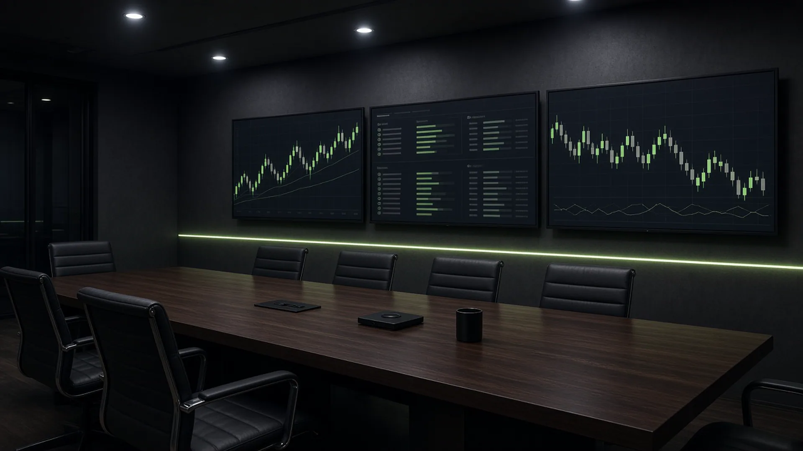

Aspirations and outcomes
One to three points of EBITDA, freed working capital, gross margin and net revenue that actually move.
Our edge / Outcomes first
What sets us apart is execution. Operators who have run transformation at scale. Work that shows up on the P&L.

One to three points of EBITDA, freed working capital, gross margin and net revenue that actually move.
We excavate wins and failures across supply chain, finance, CX, and IT, then map the decisions that swing performance.
Cross-functional squads and AI cockpits turn live data into recommended action. Operators steer. The loop tests itself.
Fast pods and a generative sandbox simulate shocks, lock playbooks, and keep tomorrow from arriving unprepared.
Annual plans give way to rolling ninety-day cycles on a self-tuning twin. Sense. Simulate. Tune.